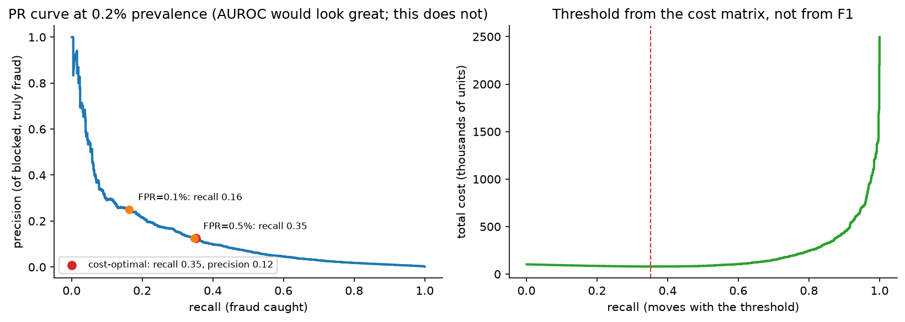

Fraud & anomaly detection¶
Why this matters / who asks it. Stripe, PayPal, Block, Coinbase, Adyen, Uber, Airbnb, Grab, Booking and every bank run a fraud system, and they all ask this question because it is the one ML problem where a false positive is a real customer whose card was declined and a false negative is money leaving the building. The business problem is a cost-minimisation problem under adversarial drift: at 0.1 % prevalence, block too little and you eat chargebacks; block too much and you lose more revenue in false declines than you saved. The interviewer is checking that you reach for a cost matrix instead of F1, that you know what happens to the labels of the transactions you blocked, that you can compute graph features in real time, and that you know why the rules engine never goes away.
TL;DR: the whiteboard in 60 seconds¶
flowchart LR
TX[Transaction / signup / listing<br/>event] --> FE[Real-time feature service<br/>entity counters, velocity,<br/>device + IP + graph lookups]
FE --> RULES[Rules engine<br/>hard blocks, allowlists,<br/>regulatory rules]
RULES -->|pass| M[Model ensemble<br/>GBDT + embeddings + GNN score<br/>→ calibrated p_fraud]
M --> POL[Decision policy<br/>cost matrix + thresholds<br/>+ per-merchant risk appetite]
POL --> A[Allow]
POL --> C[Challenge<br/>3DS / step-up auth / hold]
POL --> Q[Review queue<br/>human analysts]
POL --> B[Block]
Q --> LBL[Analyst labels]
A -.->|chargeback in 30-120 days| LBL
C -.->|outcome| LBL
B -.->|NO LABEL EVER| X[Censored]
LBL --> TRN[Training<br/>weekly + fast-path for new attacks]
TRN --> M
M --> MON[Monitoring<br/>score drift, approval rate,<br/>attack detection, fairness]- Three decisions, not two: allow / challenge / review / block. The middle options are what make a high-recall system survivable, because a challenge costs friction, not revenue.
- The threshold comes from a cost matrix, not from F1: minimise \(\mathbb{E}[\text{cost}] = c_{FN}\,\text{FN} + c_{FP}\,\text{FP} + c_{\text{review}}\,R\), where \(c_{FN}\) is the chargeback plus fee plus fine exposure and \(c_{FP}\) is the lost margin plus the lifetime-value damage of declining a good customer.
- Extreme imbalance (0.05–1 % positives): AUPRC and recall at a fixed low FPR, never accuracy, rarely AUROC.
- Labels are censored: blocked transactions never produce a chargeback, so the model never learns it was wrong. Fix with a small random allow-through ("bleed-through") population, challenge outcomes, and analyst review.
- Labels are late: chargebacks arrive 30–120 days later. Train on matured windows; use fast proxies (analyst decisions, issuer declines, refund requests) for the recent window.
- Adversaries adapt: the distribution shifts because you deployed. Retrain frequently, keep an unsupervised layer for novel patterns, and measure time-to-detect for new attack clusters.
- Graph features carry the signal: shared device, card, IP, address, bank account; entity resolution and GNN embeddings catch rings that per-transaction features cannot.
- Rules + ML, always: rules for known-bad and for regulatory must-blocks (fast, auditable, instantly deployable); ML for the grey zone.
- Explainability is a requirement where adverse-action notices or model-risk governance apply: reason codes per decision, monotonic constraints, model documentation.
- Evidence: Stripe Radar (Stripe engineering posts and docs), PayPal (graph/deep-learning talks and papers), Uber (Michelangelo and risk-platform posts), Airbnb (trust/graph posts), Grab (GraphQL-era fraud posts), Amazon (Fraud Detector docs), and the academic canon (Dal Pozzolo et al., Chen & Guestrin, Liu et al. isolation forest).
1. Requirements & scoping¶
Functional. Score each risk event (card payment, account signup, login, payout, listing creation, promo redemption) in the authorisation path, return a decision (allow / challenge / review / block) with reason codes, and support per-merchant or per-market risk policies. Support analyst review with case context, and support instant rule deployment during an attack.
Non-functional, ask for or assume.
| Quantity | Ask | Defensible assumption |
|---|---|---|
| Volume | "Transactions per second, peak?" | 5k/s average, 25k/s peak (a payments processor at scale) |
| Latency | "Budget inside the authorisation path?" | 100 ms p99 total; model ~20 ms, features ~40 ms |
| Prevalence | "Fraud rate in basis points of volume and of count?" | 10 bps of volume, ~0.1 % of transactions |
| Label delay | "Chargeback window?" | 60–120 days; analyst labels in hours |
| Review capacity | "Analyst headcount and cases per analyst-hour?" | 200 analysts × 20 cases/h = 4k cases/h ≈ 0.02 % of volume |
| Constraints | "Regulated decisions? Adverse-action notices? Model risk governance?" | Yes for lending-adjacent; reason codes required |
| Availability | "What do we do if the model is down: fail open or closed?" | Fail open with tightened rules; a payments outage costs more than the fraud |
Success metrics.
- North star: net fraud cost in basis points = (fraud losses + review cost + false-decline revenue loss) / total volume. Say this out loud; candidates who optimise recall alone fail here.
- Guardrails: authorisation/approval rate (the merchant-visible number), false decline rate on known-good customers, review queue backlog and SLA, latency, disparate impact across protected or proxy segments, appeal overturn rate.
- Offline proxies: AUPRC, recall at FPR = 0.1 % and 0.5 %, precision at the review-capacity operating point, calibration in the decision band, and value-weighted recall (fraud dollars caught, not transactions caught).
Questions a staff engineer asks.
- "Whose money is at risk, ours, the merchant's, or the issuer's? That decides the cost matrix and therefore the threshold."
- "What is the cost of a false decline in this vertical? For a $3 coffee it is noise; for a $3,000 booking it is a lost customer."
- "Do we have a challenge mechanism (3DS, OTP, ID check)? If yes, I can run at much higher recall for far less revenue damage."
- "Can I hold out a random sample of transactions we would have blocked? Without it I cannot estimate recall or retrain honestly."
- "Are decisions subject to adverse-action or model-risk rules? That constrains the model family and requires reason codes."
- "How fast must a new attack pattern be blocked, hours or days? That decides whether I need a rules fast path and an unsupervised layer."
2. Data¶
Sources. Transaction records (amount, currency, merchant, MCC, card BIN, timestamps), identity (account age, KYC status, verified email/phone), device fingerprint and browser signals, IP and geolocation, network (card–account–device–IP graph), behavioural/biometric (typing cadence, session navigation), issuer response codes, historical disputes, merchant-level context, and third-party signals (consortium lists, sanctions).
Labels.
| Label source | Latency | Quality | Bias |
|---|---|---|---|
| Chargeback / dispute | 30–120 days | High precision for "fraud" reason codes | Only for allowed transactions; merchant-dependent reporting |
| Analyst review decision | Hours | Good, but analyst-dependent | Only for queued cases; queue is selected by the model |
| Customer report ("I didn't do this") | Days | High precision | Under-reports small amounts |
| Issuer decline / soft decline | Seconds | Weak proxy | Confounded with credit limits |
| Bleed-through (deliberately allowed high-risk) | Chargeback window | The only unbiased signal in the risky region | Costs real money; keep tiny |
The censoring problem, stated properly. Let \(A\) be the allow decision. You observe the fraud label \(Y\) only when \(A = 1\). Training on \(\{(x, Y) : A = 1\}\) estimates \(P(Y = 1 \mid x, A = 1)\), not \(P(Y=1 \mid x)\), and the gap is largest exactly where the model is confident, the region you care about. Three mitigations, and you should name all three: (a) a small randomised bleed-through population in the block region with a strict dollar cap, which restores propensities for inverse-propensity estimation; (b) challenge outcomes as a partial label (a failed step-up is strong evidence of fraud); (c) reject inference, model the missing labels with a selection-corrected likelihood, treating blocked transactions as unlabelled in a positive-unlabelled framework. The cleanest interview answer: "the block decision is a treatment; without randomisation in the treated region I have no counterfactual, so I would buy one with a capped bleed-through budget."
Adversarial drift. Unlike a feed, the data-generating process responds to your model. Attack patterns have a signature lifecycle: probe (small amounts, many cards), scale (once a hole is found), and decay (once blocked). Two consequences: models degrade in days, not months, and a stationary backtest overstates performance. Backtest forward in time only, and report performance as a function of weeks since training.
Features. Per-event (amount, z-scored by merchant and by customer history; hour; mismatch flags between billing/shipping/IP country), velocity counters (attempts per card / device / IP / email over 1 min, 1 h, 24 h, 7 d, these are the workhorses), aggregates (customer's historical decline rate, merchant's fraud rate), graph features (§3.4), embeddings (merchant, device, BIN; text of the shipping address), and sequence features (the customer's last \(N\) events, with an attention pooling over them).
Freshness. Velocity counters must reflect events from milliseconds ago, a card-testing attack fires hundreds of attempts per minute, and a counter that is a minute stale is useless. This is the strongest real-time feature requirement in this part; it forces a streaming aggregation layer with read-your-writes semantics inside the authorisation path.
Privacy and regulation. PCI scope for card data (tokenise; never train on PANs), GDPR/CCPA deletion, and the fairness constraint that the model must not use protected attributes or close proxies; where the decision is credit-adjacent, adverse action requires reason codes.
3. Modelling¶
3.1 Baseline¶
A rules engine: velocity limits, country mismatch, BIN blocklists, amount thresholds. It is also the permanent fast path, during an attack, a rule ships in minutes while a model ships in days. State that the ML system's job is the grey zone the rules cannot express, and that every model launch is measured against rules plus the previous model.
3.2 Supervised core: GBDT first¶
Gradient-boosted trees (XGBoost/LightGBM) on a few hundred engineered features is still the strongest default: it handles missing values natively (a missing device fingerprint is itself a signal), is robust to unscaled and skewed features, trains in minutes so you can retrain often, supports monotonic constraints (risk must not decrease as velocity increases, valuable both for robustness and for regulators), and yields per-feature attributions (SHAP) that become reason codes.
The loss is weighted binary cross-entropy:
where \(v_i\) weights positives by the dollar amount at risk, so the model spends capacity where the money is. Say why this beats class-balancing by resampling: resampling distorts calibration (and you need calibration for the cost policy), whereas value weighting changes what "important" means without changing the base rate arithmetic you can correct analytically.
Imbalance handling. Down-sample negatives with the same \(p = p'/(p' + (1-p')/w)\) correction derived in the ads chapter; do not over-sample positives with SMOTE in a high-dimensional adversarial setting (synthetic positives interpolate between distinct attack modes and create regions no attacker occupies).
3.3 Deep models and sequences¶
Where they earn their place: (a) entity embeddings for high-cardinality ids (merchant, BIN, device model, email domain) learned jointly with the task, which generalise to rarely seen values better than target encoding; (b) sequence models over the customer's event history (a transaction is suspicious relative to this customer's pattern, which a per-event model cannot see); (c) text and address models for shipping-address and name anomalies. The standard production shape is a hybrid: a DNN produces embeddings and a sequence score, which enter the GBDT as features, so the GBDT retains its robustness and interpretability while the DNN supplies representations.
3.4 Graph features and GNNs¶
Fraud is organised. One stolen-card ring shares devices, IPs, addresses and payout accounts. Build an entity graph whose nodes are accounts, cards, devices, IPs, emails, addresses and payout destinations, and whose edges are "used together". Three levels of sophistication, and you should offer them as a ladder:
- Hand-built graph features: degree of the device node, number of distinct cards on this device in 24 h, fraction of the connected component already labelled fraudulent, age of the oldest account in the component. Cheap, explainable, and they capture most of the value. The engineering problem is computing them in under ~20 ms, which means a graph store with pre-materialised neighbourhood aggregates instead of an online traversal.
- Community detection / connected components run in batch to label rings, with the ring label fed back as a feature and as a bulk-action target.
- GNNs (GraphSAGE-style inductive aggregation over the \(k\)-hop neighbourhood) producing node embeddings, trained with the fraud label. They capture "my neighbours' neighbours look bad" patterns without hand-specification. Costs: neighbourhood sampling latency, a graph that changes every second, and label leakage through edges added after the event (a strict point-in-time graph snapshot is required, which is the single most common bug in graph-fraud pipelines).
For the interview: propose (1) for the online path and (3) computed in near-line mode with embeddings cached per entity, refreshed every few minutes. That keeps the authorisation path fast and still captures ring structure.
3.5 Unsupervised anomaly detection: when it is worth it¶
Supervised models only find fraud that resembles labelled fraud. Novel attacks have no labels for days. An unsupervised layer buys time:
- Isolation Forest (Liu, Ting & Zhou, ICDM 2008): isolates points with random splits; anomalies need fewer splits. Cheap, no assumptions, works on mixed tabular data.
- Autoencoder reconstruction error: train on presumed-good traffic; large reconstruction error signals "unlike normal". Sensitive to the definition of "normal" and prone to flagging rare-but-legitimate behaviour.
- Clustering on velocity space: card-testing attacks appear as tight clusters in (merchant, amount, time) space. This is often the most effective novelty detector in payments, because attacks are bursty and repetitive, not merely rare.
The honest framing: unsupervised detectors have terrible precision at the operating points a blocking system needs; their job is to route to analysts and to trigger rules, not to block. Say that explicitly. Proposing an autoencoder as the primary detector is a common interview trap.
3.6 The decision policy¶
The model outputs a calibrated \(\hat p\). The policy converts it to an action by expected cost. With actions allow / challenge / review / block and an amount \(a\):
where \(m\) is the lost margin, \(\ell_{\text{LTV}}\) the customer-lifetime damage of a wrong decline, \(r_{\text{stop}}\) the fraction of fraud the challenge stops, and \(\varepsilon\) the analysts' error rates. Choose the argmin. Two consequences worth stating: the block threshold is amount-dependent (high-value transactions block at lower \(\hat p\) only if \(a \gg m\); for thin-margin high-value goods it is the opposite), and the review threshold is set by capacity, so it moves daily.

Left: at 0.2 % prevalence the PR curve is brutal, 35 % recall buys only ~12 % precision, while AUROC on the same scores would look excellent. Right: total cost as a function of the threshold under a 100:5 miss-to-false-decline cost ratio; the minimum, not F1, is the operating point. Redo this with the interviewer's real cost numbers.
3.7 Calibration and drift¶
The policy consumes probabilities, so calibration matters as much as in ads. Calibrate per segment (region, payment method, merchant category) with isotonic regression on a matured window, and monitor \(\sum \hat p / \sum y\) per segment. Under adversarial drift, calibration decays fastest, a rising fraud rate that the model has not learned shows up first as under-prediction in one segment.
3.8 Explainability¶
Per-decision reason codes from SHAP values (top-3 contributing feature groups, mapped to human-readable reasons), monotonic constraints so that direction of effect is defensible, a model card and performance-by-segment documentation for model risk governance, and an appeals path whose overturn rate is a monitored metric. Note the tension: a GNN embedding is powerful and nearly impossible to explain to a regulator, which is one reason it often sits in the review-routing path rather than the auto-block path.
4. Training & serving¶
flowchart TB
S[Event streams<br/>transactions, logins, devices] --> AGG[Streaming aggregator<br/>velocity counters, sliding windows]
AGG --> ON[(Online store<br/>sub-ms reads)]
S --> DL[(Data lake)]
DL --> PIT[Point-in-time feature builder<br/>+ graph snapshot at event time]
PIT --> TRN[Trainer<br/>GBDT weekly, embeddings weekly,<br/>fast-path daily on new attacks]
LBLS[Labels: chargebacks (matured),<br/>analyst decisions, challenges] --> PIT
TRN --> GATE[Gates: AUPRC, recall@FPR,<br/>calibration, segment fairness,<br/>latency, reason-code sanity]
GATE --> SHADOW[Shadow on live traffic]
SHADOW --> CAN[Canary by merchant slice]
CAN --> SRV[Serving: rules → model → policy]
ON --> SRV
SRV --> LOGS[Served-feature logs + decisions]
LOGS --> DLCadence. Weekly full retrains on a 6–12-month window (with recency weighting), a daily fast path that adds the last week of analyst-labelled attack data, and a rules path measured in minutes. Explain the asymmetry: model retraining cannot outrun an attacker, so the architecture must have a faster lever than retraining.
Latency budget (100 ms p99 inside authorisation).
| Stage | Budget | Notes |
|---|---|---|
| Rules pre-filter | 3 ms | in-process, compiled rules |
| Feature fetch (counters, entity aggregates, cached graph embeddings) | 40 ms | parallel fan-out; timeouts return defaults with a monitored rate |
| Model scoring (GBDT ensemble + DNN score) | 15 ms | CPU; trees are microseconds, the DNN dominates |
| Calibration + policy | 2 ms | lookup + arithmetic |
| Logging, decision return | 10 ms | fire-and-forget logging |
| Headroom / network | 30 ms |
Fail-open vs fail-closed. State the choice and its justification: payments generally fail open with tightened rules, because a global decline outage is a larger business event than a few hours of elevated fraud; account-takeover and payout flows often fail closed, because the loss is unrecoverable. This is a decision an interviewer expects you to make explicitly, with the cost argument attached.
Cost. 25k TPS × ~15 ms of CPU = ~375 cores for scoring, plus the streaming aggregation layer (usually the larger bill) and the graph store. Analyst review is frequently the dominant total cost, which is why the review threshold is a first-class design parameter.
5. Evaluation & experimentation¶
Offline.
- Time-forward backtests only: train on \([t_0, t_1]\), test on \([t_1, t_1 + \Delta]\), and report metric decay across \(\Delta\) = 1, 2, 4, 8 weeks. A random split in fraud is a different problem, and a much easier one.
- AUPRC, recall at fixed low FPR, precision at the capacity point, dollar-weighted recall, and calibration in the decision band.
- Counterfactual policy evaluation on the bleed-through population: estimate the new policy's expected cost with inverse-propensity or doubly-robust estimators, since a straight offline comparison cannot tell you what the transactions you blocked would have done.
- Pitfalls: label leakage through features computed after the event (the graph snapshot bug); evaluating on chargebacks that have not matured (recent months look artificially clean); measuring recall on the biased allowed population and calling it recall.
Online.
- A/B at the entity level (customer or merchant, never transaction) to avoid contamination from velocity features shared across arms. The interference is real: a treatment that blocks the first attempt changes the features of the control's second attempt.
- Guardrails: approval rate, false-decline complaints, review backlog, and the dollar-cost metric. Ramp slowly by merchant vertical; fraud effects are heavy-tailed, so a two-week test can be dominated by one ring.
- Champion/challenger in shadow for weeks before any traffic, because the loss distribution is fat-tailed and the shadow comparison of score distributions is often more informative than the short A/B.
Monitoring and retraining triggers. Score-distribution drift (PSI per segment), approval and block rates per merchant, calibration ratio, feature null/timeout rates, review queue age, new-cluster detection (a burst of similar events), and time-to-detect for injected red-team patterns. Retrain on a schedule; trigger the fast path on a cluster alarm; roll back on approval-rate breach.
6. Trade-offs & alternatives¶
| Decision | Chosen | Alternative | When you'd flip |
|---|---|---|---|
| Core model | GBDT with value-weighted loss | Deep net end-to-end | Sequence/text/graph signal dominates and you have the labels; keep GBDT as the ensemble member |
| Imbalance | Value-weighted loss + negative down-sampling with correction | SMOTE / over-sampling | Small data, non-adversarial domain |
| Novel attacks | Unsupervised layer routes to analysts + rules fast path | Rely on retraining | Never; retraining is too slow to be the only lever |
| Graph | Hand features online + GNN embeddings near-line | Online GNN traversal | Latency budget is generous (batch payouts, not card auth) |
| Threshold | Cost matrix argmin, amount-aware | Fixed F1-optimal threshold | Never for money decisions; fixed thresholds only for triage |
| Blocked-label problem | Capped random bleed-through | Reject inference only | Regulation or loss size forbids deliberate allow-through; then rely on challenges |
| Decision set | allow / challenge / review / block | Binary allow/block | No step-up mechanism exists; then invest in building one |
| Failure mode | Fail open with tightened rules (payments) | Fail closed | Irreversible loss flows (payouts, withdrawals) |
| Explainability | Monotonic GBDT + SHAP reason codes | Best-accuracy black box | Unregulated internal abuse detection |
| Experiment unit | Customer/merchant | Transaction | Never transaction; velocity features leak across arms |
Failure modes.
- Feedback-loop blindness: the model blocks a pattern, the pattern disappears from training data, the next model forgets it and the attack returns. Detect with retained historical attack sets in the evaluation suite (a "regression bank" of past attacks, exactly like an AV scenario bank).
- Velocity counter lag during a spike: counters fall behind, card testing walks through. Detect with counter-freshness SLIs, not model metrics.
- A merchant onboarding shifts the distribution: a new large merchant with unusual patterns looks like an attack. Segment monitoring and merchant-level calibration.
- Analyst label drift: a new team labels differently; model chases the labeller. Regular inter-analyst agreement audits and golden cases.
- Fairness: proxies for protected attributes (postcode, device price tier) drive declines. Measure decline rates by segment; constrain or remove features.
7. How real companies did it: as mock interviews¶
7.1 Stripe: "score every payment for every merchant"¶
Interviewer prompt. "We process payments for millions of businesses. Each has its own customers and its own idea of acceptable risk, and most are too small to have any fraud data of their own. Build a system that scores every charge in the authorisation path and lets each business tune its own risk appetite."
Walkthrough. Clarify: the network effect is the asset, signals from the whole network apply to a new merchant with zero history; the decision must be sub-100 ms inside authorisation; merchants need control and explanations. Metrics: fraud basis points and false-positive rate, reported to merchants. Data: card and device signals seen across the network, plus per-merchant history; chargeback labels with their delay. Model: a large supervised model over hundreds of network-wide and merchant-level signals, refreshed frequently, with per-merchant thresholds and rule overrides layered on top. Serve: in the charge path, with a rules engine and allow/block lists. Evaluate: precision/recall at merchant-facing operating points, plus merchant-visible metrics.
What the sources say. Stripe's Radar documentation and engineering posts describe Radar as trained on signals from the businesses across the Stripe network (so a card seen at one business informs risk at another), scoring every charge with a risk score in the payment path, with configurable rules, allow/block lists and review queues layered on the ML score; Stripe's engineering blog has also described moving Radar's models to deep-learning architectures and the evaluation practices around them.
How to say it in the interview: network signals beat per-merchant models
"I would train one network-wide model rather than a model per merchant, and give merchants control through thresholds and rules instead of separate models. Stripe's Radar documentation describes it this way: each payment is scored in real time from hundreds of signals plus data from across the network of businesses on Stripe, and the output is a 0 to 99 risk score with documented risk bands that merchants act on. A card that just committed fraud at another business is already risky at yours, which is the only way a brand-new merchant with no history gets protection on day one. The alternative is a model per large merchant. That fits merchant-specific patterns better, and I would add it as a second model for the largest accounts, but it cannot see the network and it starves on data for the long tail. The trade-off is that one global model must be calibrated per segment, because a marketplace's normal looks like a subscription business's fraud, so I'd fit per-vertical calibration and let merchants set their own operating point on the calibrated score."
7.2 PayPal: "the fraud is a ring, not a transaction"¶
Interviewer prompt. "Our per-transaction model catches individual bad payments but keeps missing coordinated rings that each look normal in isolation. What do you change?"
Walkthrough. Clarify: the entity graph available (accounts, cards, devices, IPs, bank accounts); how fast the graph changes; whether decisions can be bulk actions on a ring. Metrics: dollar-weighted recall on ring-attributed losses and time-to-detect a new ring. Data: the graph with strict point-in-time snapshots. Model: graph features first (component size, labelled-fraud share in the neighbourhood, device-sharing degree), then inductive GNN embeddings near-line; feed both into the supervised model, and use community detection for bulk action. Serve: cached per-entity embeddings and neighbourhood aggregates, refreshed every few minutes. Evaluate: ring-level detection, not only transaction-level.
What the sources say. PayPal's technology blog post "How PayPal Uses Real-time Graph Database and Graph Analysis to Fight Fraud" describes their graph platform: a real-time graph store over accounts, devices and funding instruments, graph algorithms such as connected components and centrality for finding rings, and graph neural networks built on top of the graph store, all as a complement to per-transaction models.
How to say it in the interview: graph features before GNNs
"I'd add graph signal in two steps rather than going straight to a GNN. Step one is hand-built neighbourhood aggregates: how many distinct cards on this device in 24 hours, what share of this connected component is already labelled fraud. Those are cheap, explainable, and they capture most of the ring signal. step two is inductive GNN embeddings computed near-line and cached per entity. The reason the GNN goes near-line rather than in the auth path is the 40 ms feature budget: a two-hop neighbourhood sample over a graph that changes every second will not fit. PayPal and other payment networks have published on graph learning for exactly this problem: linking accounts, devices and funding instruments to catch coordinated rings that look normal per transaction. The trade-off I'd flag is the point-in-time trap: if the graph snapshot includes edges created after the event, the model trains on the future and the backtest looks spectacular. I'd build the graph snapshot into the feature store, so the training job never has to reconstruct it."
7.3 Uber: "risk across payments, accounts and promotions"¶
Interviewer prompt. "We have fraud in three places: stolen cards on rides, fake accounts farming promotions, and collusion between riders and drivers. Design a platform that serves all three without building three systems."
Walkthrough. Clarify: shared entity space (user, device, payment instrument, trip), different latencies (payment auth vs post-trip review), different cost matrices. Metrics: per-vertical cost metrics on a shared dashboard. Data: one event stream, one feature platform, one graph. Model: shared features and embeddings, per-vertical heads and thresholds; a rules engine shared across all. Serve: the same real-time feature platform that serves the rest of the company's ML. Evaluate: per-vertical, with a shared experimentation framework.
What the sources say. Uber's engineering blog describes Michelangelo, their end-to-end ML platform, as serving real-time predictive use cases across the company including fraud detection, with a shared feature store (Palette) providing consistent offline and online features and low-latency online serving; Uber has also published on real-time streaming aggregation for such features.
How to say it in the interview: one platform, many heads
"I'd build one risk platform with shared entity features and a graph, then per-vertical models and policies on top, rather than three vertical stacks. Uber's Michelangelo posts describe this shape: one feature platform with consistent offline and online definitions serving many real-time use cases, fraud among them. The entities overlap here. A device that farms promo codes today is the device that runs a stolen card tomorrow, and separate stacks would never join those. The alternative is independent systems per vertical, which ships faster for the first vertical and then duplicates the hardest component three times, namely real-time velocity counters with point-in-time correctness. The trade-off is coupling: a shared feature pipeline failure hits all three verticals, so I'd want per-vertical graceful degradation and separate on-call ownership of the policies."
7.4 Airbnb: "the loss is trust, not just money"¶
Interviewer prompt. "Fake listings and stolen-card bookings damage guest trust more than they cost us in chargebacks. We can't just block aggressively, a wrongly blocked host loses their income. Design the system and the review process."
Walkthrough. Clarify: irreversible actions (removing a host) require humans; the cost of a false positive is reputational and legal, not only margin. Metrics: trust incidents per million bookings alongside financial loss; appeal overturn rate as a first-class metric. Data: listing content (images, text), host and guest history, payment signals, messaging behaviour. Model: multimodal risk scoring (image and text anomalies for fake listings, payment and graph signals for card fraud), feeding a review queue with rich case context instead of auto-blocking. Serve: mostly near-line, listings can be scored at creation, bookings at authorisation. Evaluate: precision at the review capacity, plus overturn rate.
What the sources say. Airbnb's engineering blog describes "Architecting a Machine Learning System for Risk", a framework combining fast real-time scoring with an agile model-building pipeline, motivated by the observation that fraud vectors morph constantly so new models and features must reach production quickly. "Fighting Financial Fraud with Targeted Friction" describes models trained on confirmed good and fraudulent behaviour, with an added verification step (a "friction") that blocks fraudsters while staying easy for good users. "Graph Machine Learning at Airbnb" describes using graph neural networks to improve their models, with protecting the community from harm as the motivating use case.
How to say it in the interview: irreversibility decides autonomy
"My rule is that reversibility decides whether a model may act alone. A declined payment is reversible (the customer retries or uses another card) so the model can block at the cost-optimal threshold. Removing a host's listing is not reversible in any meaningful sense, because the income and the trust are gone before the appeal is heard, so that action needs a human in the loop and the model's job is to rank the review queue. Airbnb's post 'Fighting Financial Fraud with Targeted Friction' makes the middle move explicit: instead of blocking, add a verification step that a fraudster fails and a good user passes easily, and their 'Architecting a Machine Learning System for Risk' post describes the scoring and decision framework around it. The trade-off is latency and cost (review capacity becomes the binding constraint on recall) so I'd measure precision at the capacity point and treat appeal overturn rate as a launch guardrail, because a rising overturn rate means the model is buying recall with other people's livelihoods."
7.5 Amazon: "we have no data scientists and three weeks"¶
Interviewer prompt. "A mid-size retailer wants fraud detection but has no ML team. What does a managed solution have to get right, and what would you still build yourself?"
Walkthrough. Clarify: data available (historical orders with fraud outcomes), volume, latency. Model: a managed service that combines the customer's labelled history with signals learned from the provider's wider data, produces a calibrated score and reason codes, and exposes rules. Serve: a hosted real-time endpoint. Evaluate: AUC/AUPRC on a held-out time-forward split, then a shadow period.
What the sources say. Amazon Fraud Detector's documentation describes a managed service that trains models on the customer's historical fraud data combined with patterns learned from Amazon's own fraud-detection experience, producing scores with explanations and supporting rules, for use cases such as new-account fraud and online payment fraud.
How to say it in the interview: build vs buy, honestly
"If the company has no ML team and no labelled history, a managed detector is the right first move: Amazon Fraud Detector's docs describe combining the customer's own fraud labels with patterns learned from Amazon's experience, which is the transfer-learning argument for buying rather than building at the start. What I would still build myself on day one is the decision layer and the label pipeline: the cost matrix, the review queue, the bleed-through sample and the chargeback join. Those encode business economics no vendor knows, and because they are what makes a later in-house model possible. The flip condition is volume and specificity: once fraud losses exceed roughly the cost of a small team and the patterns are domain-specific, an in-house model on your own feature platform wins, and the vendor score becomes one feature."
7.6 The academic anchor: "why the usual metrics mislead"¶
Interviewer prompt. "Your model reports 0.98 AUROC. Should I be happy?"
Walkthrough. Clarify: prevalence. At 0.1 % positives, 0.98 AUROC is compatible with terrible precision at any usable threshold; the informative curve is precision–recall and the informative number is precision at the FPR the business can afford. Data: the label delay means recent performance is unmeasurable. Evaluate: report AUPRC, recall at FPR = 0.1 %, and the cost curve.
What the sources say. Dal Pozzolo et al., "Credit Card Fraud Detection: A Realistic Modeling and a Novel Learning Strategy" (IEEE TNNLS 2018) formalises the verification-latency and concept-drift problems in card fraud, only a small fraction of transactions are checked by investigators, and most labels arrive days later, and proposes learning strategies that account for both; Saito & Rehmsmeier ("The Precision-Recall Plot Is More Informative than the ROC Plot When Evaluating Binary Classifiers on Imbalanced Datasets", PLoS ONE 2015) is the standard citation for why PR curves, not ROC, belong in imbalanced evaluation.
How to say it in the interview: the metric argument
"I'd refuse to report AUROC as the headline. At 0.1 % prevalence, ROC is dominated by the vast negative class, and Saito and Rehmsmeier's 2015 PLoS ONE paper is the standard reference for preferring precision–recall on imbalanced data. What I'd report instead is recall at the false-positive rate the approval team can tolerate, dollar-weighted recall, and the total cost curve. I'd also report metric decay over weeks since training, because Dal Pozzolo and colleagues showed in their 2018 TNNLS work on card fraud that verification latency and concept drift dominate realistic performance. The model that wins a static backtest is often not the one that survives a month in production."
8. Staff-level follow-ups¶
Your model blocks a transaction. How do you ever find out it was wrong?
Usually you don't, and that is the central design problem. Four sources of signal: (1) customer complaints and retries, which are a biased but real indicator of false declines; (2) challenge outcomes, since a passed step-up is a label; (3) a deliberately randomised bleed-through population with a hard dollar cap, which is the only unbiased estimate of what the block region contains and which also gives you the propensities for counterfactual policy evaluation; (4) analyst adjudication on a sample of blocks. I'd spend the bleed-through budget as an explicit line item (typically a tiny fraction of volume with a per-transaction amount cap) and I would argue for it the way you argue for exploration traffic in ranking: without it, the system's recall is unmeasurable and it degrades silently.
How do you set the threshold?
From the cost matrix, per segment, and it is amount-aware. Write \(\mathbb{E}[\text{cost}\mid\text{block}] = (1-\hat p)(m + \ell_{\text{LTV}})\) versus \(\mathbb{E}[\text{cost}\mid\text{allow}] = \hat p (a + f)\) and solve for the indifference point: block when \(\hat p > \frac{m + \ell_{\text{LTV}}}{a + f + m + \ell_{\text{LTV}}}\). That immediately shows the threshold falls as the amount at risk rises and rises as the lost-customer cost rises. Then the review threshold is set by capacity (rank by expected saved cost per review-minute, cut at the queue's throughput) and the challenge threshold by the challenge's stop rate and friction cost. The number I never use is the F1-optimal threshold, because F1 assumes false positives and false negatives cost the same, which in payments is off by one to two orders of magnitude.
Fraud spikes 5× overnight. Walk me through the first hour.
Triage: is it a real attack, a data break, or a label artefact? Check the velocity-counter freshness SLI and the feature null rate first, a stale counter looks exactly like an attack. If real, cluster the recent events (merchant, amount, BIN, device, IP) to find the signature; ship a targeted rule within minutes (rules are the fast lever, the model is not), and set it to challenge rather than block if the signature is broad, to limit collateral damage. Raise the review threshold to absorb what the rule does not catch, and warn the analyst team. Then queue a fast-path retrain on the newly labelled cluster and schedule the rule for review in a week, because temporary rules that never expire are how rules engines become unmaintainable.
Precision is 30 % at the operating point. The business says that's unacceptable. What do you say?
That 30 % precision at 0.1 % prevalence means the model is 300× better than random, and that precision is the wrong frame for the conversation, the right frame is the cost curve. If we block at this point, we save \(X\) in fraud and lose \(Y\) in false declines; if \(X > Y\) the decision is correct even at 30 % precision. If the business objects to the experience of wrong declines rather than the money, the answer is not a higher threshold but a different action: route that band to a challenge, which converts a hard decline into a few seconds of friction and typically recovers most of the good customers.
How do you prevent label leakage in graph features?
By snapshotting the graph at event time and refusing to compute any aggregate over edges with a timestamp later than the event. Practically: store edges with validity intervals, make the feature builder take an as-of timestamp, and add a test that shuffles the event times and verifies the metric collapses to chance. The symptom of getting it wrong is a backtest that looks far too good on ring-heavy segments and a model that fails immediately in production, because online you only have the past.
The interviewer says: you must explain every declined transaction to a regulator.
Then the auto-decline path gets constrained: a monotonic-constraint GBDT or a scorecard-style model, SHAP-derived reason codes mapped to a fixed, reviewed vocabulary, documented performance by segment, and a model card with the validation evidence. The unconstrained models, GNN embeddings, sequence encoders. Those move to the review-routing path, where the action is "a human looks at this", which is not an adverse action. I'd also add a monitored appeals channel with overturn rate as a model-quality metric, because regulators look at outcomes, not architectures.
How do you A/B test a fraud model without contaminating the arms?
Randomise at the customer or merchant level, never the transaction, because velocity features and the attacker's own behaviour couple transactions: if the control allows an attempt that the treatment would have blocked, the treatment's counters for the next attempt change. Even then, the attacker adapts to the union of both policies, so a long test measures a blended world. My preferred design is a long shadow period comparing score distributions and simulated decisions, followed by a short, well-powered customer-level ramp with the dollar-cost metric and approval rate as the read-outs, ramped by merchant vertical because losses are fat-tailed.
What do you do about the fact that your training data no longer contains the attacks you blocked?
Keep a regression bank: a curated, versioned set of historical attack episodes with their features frozen, and evaluate every candidate model against it in addition to the recent holdout. That is the same practice AV teams use with scenario banks (see the perception chapter). Plus a bleed-through sample so some of each blocked pattern stays in the data, and recency-weighted training so old attacks fade rather than vanish. Without the bank, each retrain quietly forgets what it learned, and the attack returns on a six-month cycle.
Would you use an autoencoder as the primary detector?
No. Unsupervised anomaly scores have poor precision at the operating points a blocking decision requires, because most anomalies are legitimate rare behaviour , a first international purchase, a new device, a large gift order. I'd use isolation forests or clustering on velocity space as a novelty router: it raises cases to analysts and triggers rule investigation, which is how new attack signatures get labelled quickly. Once labelled, the supervised model absorbs them. The exception is a domain with genuinely no labels at all, a brand-new product. There, an unsupervised layer plus analyst review is how you bootstrap the labelled set.
What breaks first at 10× volume?
The streaming aggregation layer: velocity counters over many entity keys with sub-second freshness is the hardest scaling problem in this system, and counter lag is indistinguishable from an attack in the metrics. Second is review capacity, which does not scale linearly with headcount; the answer is better ranking of the queue and bulk actions on rings rather than case-by-case review. Third is the graph store. The model serving itself is embarrassingly parallel and is rarely the constraint.
Where would an LLM help here?
Three places, none of them in the auth path: summarising a case for an analyst (entity history, linked accounts, prior decisions) to cut review time; reading unstructured evidence, chat logs, dispute narratives, KYC documents (which is the OCR chapter) into structured features; and generating candidate rules or hypotheses from a cluster of new fraud for a human to approve. I would not put an LLM in a 100 ms authorisation decision, and I would be careful about prompt injection from attacker-controlled text fields feeding an analyst-facing summary.
9. Scaling & evolution¶
- Startup (1M transactions/year). Rules plus a logistic regression or small GBDT on velocity counters; manual review of everything above a threshold; the important investments are the label pipeline (join chargebacks back to transactions) and the decision logging, because without them you cannot build anything later.
- Mid-scale. A real GBDT with a few hundred features, a streaming aggregation layer, per-segment calibration, a review-queue ranker, time-forward backtesting, and a bleed-through sample. Entity graph features (hand-built) land here.
- Large scale. Multi-vertical platform with shared features and per-vertical heads, GNN embeddings near-line, counterfactual policy evaluation, automated rule-suggestion from clusters, a regression bank of historical attacks, and fairness/explainability tooling as a first-class subsystem.
- Batch → real-time. The order that matters: real-time counters first (they are most of the signal), then near-line graph embeddings, then fast-path retraining. Fully online learning is rarely worth the instability here, because an attacker who discovers you learn online can poison you, a consideration that does not arise in the feed.
- Single model → LLM-augmented. Analyst copilots and document understanding first; LLM-generated rule hypotheses second; foundation-model embeddings of merchant text and listing content as features third. The blocking decision itself stays with a calibrated, explainable, fast model, because the cost of a wrong decision is measured in money and regulators.
References¶
- Stripe. Radar documentation (docs.stripe.com, risk evaluation) and the Stripe engineering post "How we built it: Stripe Radar" (stripe.com).
- PayPal Technology Blog. "How PayPal Uses Real-time Graph Database and Graph Analysis to Fight Fraud" (medium.com/paypal-tech).
- Dal Pozzolo, A. et al. "Credit Card Fraud Detection: A Realistic Modeling and a Novel Learning Strategy." IEEE Transactions on Neural Networks and Learning Systems, 2018.
- Saito, T., Rehmsmeier, M. "The Precision-Recall Plot Is More Informative than the ROC Plot When Evaluating Binary Classifiers on Imbalanced Datasets." PLoS ONE, 2015.
- Liu, F. T., Ting, K. M., Zhou, Z.-H. "Isolation Forest." ICDM 2008.
- Chen, T., Guestrin, C. "XGBoost: A Scalable Tree Boosting System." KDD 2016 (arXiv:1603.02754).
- Hamilton, W. L., Ying, R., Leskovec, J. "Inductive Representation Learning on Large Graphs" (GraphSAGE). NeurIPS 2017 (arXiv:1706.02216).
- Uber Engineering. "Meet Michelangelo: Uber's Machine Learning Platform" (uber.com) and "Palette Meta Store Journey" on the feature store (uber.com).
- Airbnb Engineering. "Architecting a Machine Learning System for Risk" (medium.com/airbnb-engineering); "Fighting Financial Fraud with Targeted Friction" (medium.com/airbnb-engineering); "Graph Machine Learning at Airbnb" (medium.com/airbnb-engineering).
- Amazon Web Services. "Amazon Fraud Detector" developer documentation (docs.aws.amazon.com).
- Lundberg, S., Lee, S.-I. "A Unified Approach to Interpreting Model Predictions" (SHAP). NeurIPS 2017 (arXiv:1705.07874).
- Book cross-references: ads calibration and down-sampling, uncertainty & reliability, ML platform & point-in-time features.